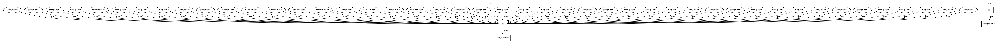

bc21db1a157188ea31c8b84b0989b78edd29655b,stanfordnlp/pipeline/depparse_processor.py,,,#,6
Before Change
from stanfordnlp.models.depparse.trainer import Trainer
from stanfordnlp.pipeline.processor import Processor
DEFAULT_DEPPARSE_CONFIG = {
"data_dir": "data/depparse", "wordvec_dir": "extern_data/word2vec", "train_file": None,
"eval_file": "parser_input.conllu",
"output_file": "parser_output.conllu",
"gold_file": "parser_input.conllu",
"pretrain_path": "saved_models/depparse/en_ewt.pretrain.pt",
"model_path": "saved_models/depparse/en_ewt_parser.pt",
"mode": "predict",
"lang": "en",
"shorthand": "en_ewt",
"best_param": False,
"hidden_dim": 400,
"char_hidden_dim": 400,
"deep_biaff_hidden_dim": 400,
"composite_deep_biaff_hidden_dim": 100,
"word_emb_dim": 75,
"char_emb_dim": 100,
"tag_emb_dim": 50,
"transformed_dim": 125,
"num_layers": 3,
"char_num_layers": 1,
"word_dropout": 0.33,
"dropout": 0.5,
"rec_dropout": 0,
"char_rec_dropout": 0,
"char": True,
"pretrain": True,
"linearization": True,
"distance": True,
"sample_train": 1.0,
"optim": "adam",
"lr": 0.003,
"beta2": 0.95,
"max_steps": 50000,
"eval_interval": 100,
"max_steps_before_stop": 3000,
"batch_size": 5000,
"max_grad_norm": 1.0,
"log_step": 20,
"save_dir": "saved_models/depparse",
"save_name": None,
"seed": 1234,
"cuda": True,
"cpu": False
}
After Change
from stanfordnlp.pipeline.processor import UDProcessor
DEPPARSE_MODEL_OPTIONS = ["batch_size", "beta2", "char", "char_emb_dim", "char_hidden_dim", "char_num_layers",
"char_rec_dropout", "composite_deep_biaff_hidden_dim", "deep_biaff_hidden_dim", "distance",
"dropout", "eval_interval", "hidden_dim", "linearization", "log_step", "lr", "max_grad_norm",
"max_steps", "max_steps_before_stop", "num_layers", "optim", "pretrain", "rec_dropout",
"seed", "tag_emb_dim", "transformed_dim", "word_dropout", "word_emb_dim"]
class DepparseProcessor(UDProcessor):
In pattern: SUPERPATTERN
Frequency: 3
Non-data size: 4
Instances
Project Name: stanfordnlp/stanza
Commit Name: bc21db1a157188ea31c8b84b0989b78edd29655b
Time: 2019-01-24
Author: jebolton@stanford.edu
File Name: stanfordnlp/pipeline/depparse_processor.py
Class Name:
Method Name:
Project Name: stanfordnlp/stanza
Commit Name: bc21db1a157188ea31c8b84b0989b78edd29655b
Time: 2019-01-24
Author: jebolton@stanford.edu
File Name: stanfordnlp/pipeline/pos_processor.py
Class Name:
Method Name:
Project Name: GoogleCloudPlatform/PerfKitBenchmarker
Commit Name: 42fbf7857efc6e2153fc51303cc5a2f306ee9c01
Time: 2019-03-21
Author: dlott@google.com
File Name: tests/linux_benchmarks/stress_ng_benchmark_test.py
Class Name: StressngTestCase
Method Name: testParseStressngResult